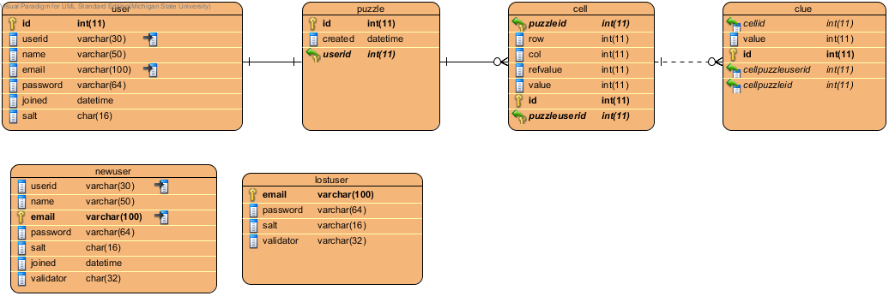

Please indicate your team members and the task assignment for each member:
Abdullah Alkawai - User management
Joe Dinkha - Server side saving/loading games
Yanning Xue - Interface features for saving/loading games
Provide an image for your ER diagram here: (as an <img> tag):

Indicate how you will encode a puzzle in your database. Remember, that you need to encode not only how the puzzle will appear to the user, but the solution as well.
We will have 10 random puzzle tables in the database. When a user logs in and starts a new game, we will associate one randomly selected puzzle to a user's account. Also linked to each puzzle is a cell and clue tables, respectively, which assist in holding the whole puzzle information. When calling save and load it will deal with referencing the appropriate puzzle, cell, and clue IDs associated to present and continue the selected puzzle.
The puzzle will be encoded by utilizing the Sudoku class to iterate over our 2D array (tables/cells) in the current puzzle to grab objects. Each cell will have data on row, column, current value, and correct values. Using puzzle IDs for reference it will then replace the row/col value with the newly saved value. This will be slightly modified (using zero instead of null) when dealing with clues.
Other user management tables include one for an established user, a newuser, and a lostuser (incase of password forgetfulness). This will store and associate specific data required for login, retrieval, puzzles associated. Currently our UML shows how a user will have a puzzle entitled to it, and how a puzzle will reference the user it is associated (saved/loaded) to.